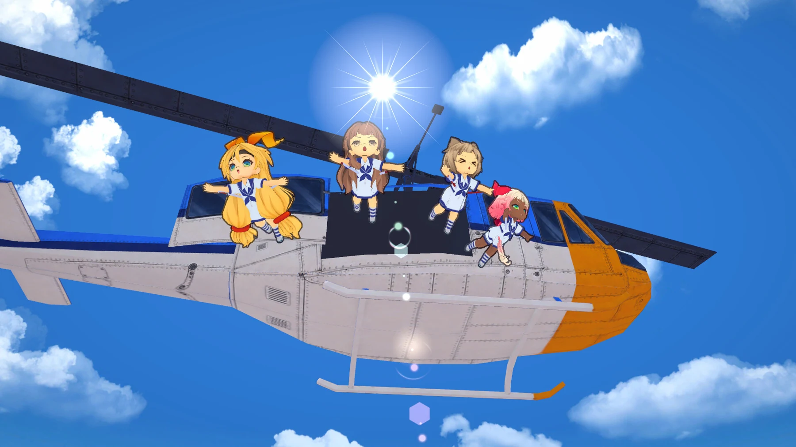
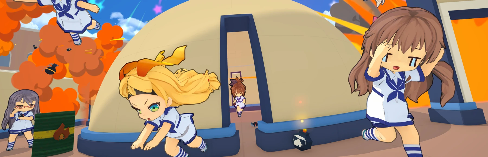
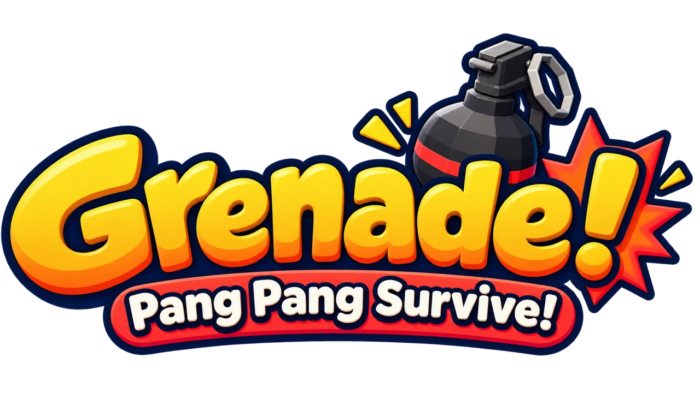
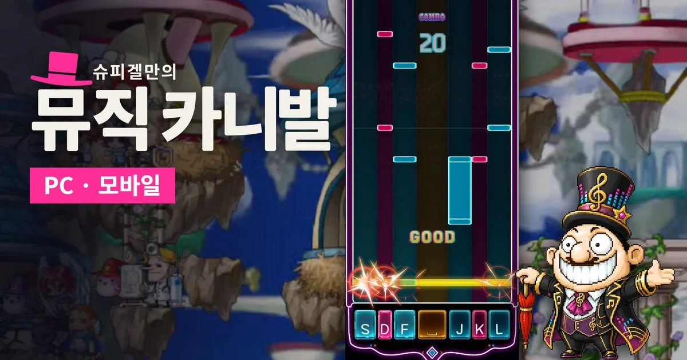
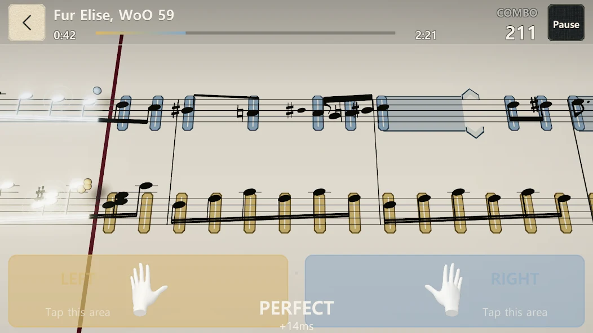
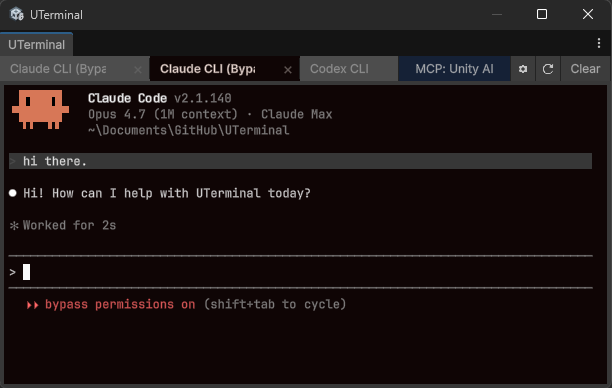
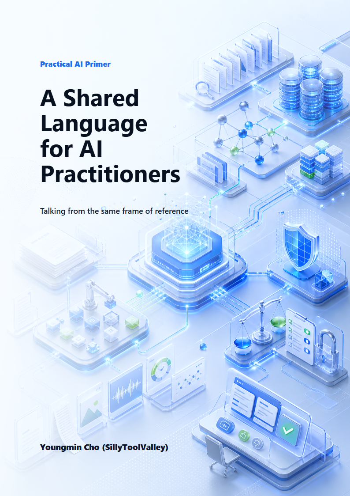
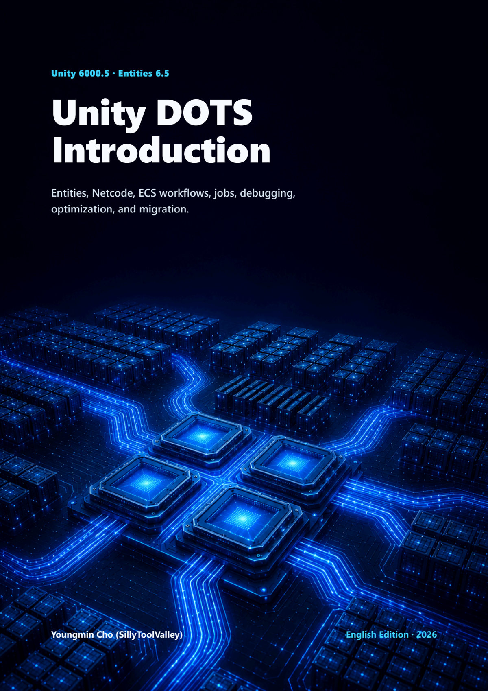
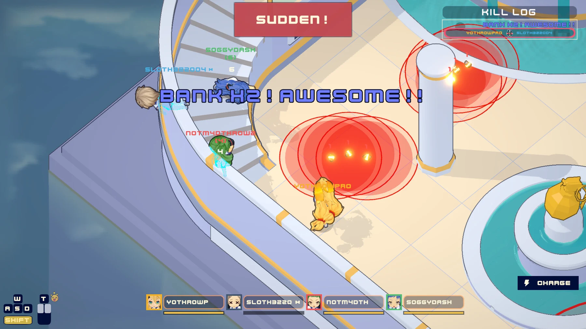

데모 공개STEAM · PC
피하고, 낚아채고, 되던지세요. 수류탄이 쏟아지는 코트에서 마지막까지 살아남는 최대 4인 온라인 액션 게임.


어떤 게임인지 궁금하다면게임 & 공식 영상 보기스크롤로 둘러보기
온라인 PvP / 최대 4인 / 액션 · 스포츠
수류탄이 쏟아지는 코트. 마지막까지 살아남는 건 누구?
PICK YOUR NEXT PLAY
지금 플레이할 게임부터.
준비 중인 다음 작품까지.

데모 공개STEAM · PC
피하고, 낚아채고, 되던지세요. 수류탄이 쏟아지는 코트에서 마지막까지 살아남는 최대 4인 온라인 액션 게임.

공개 오픈베타MAPLESTORY WORLDS · PC / MOBILE
익숙한 메이플스토리 OST를 나만의 연주로. 키보드와 터치로 즐기는 리듬게임입니다.
IN DEVELOPMENT
새로운 세계를 준비하고 있습니다. Terra Palz의 다음 이야기를 기대해 주세요.

사전예약 중GOOGLE PLAY · ANDROID
복잡한 악보 없이, 가이드 노트를 따라 클래식 피아노를 연주해 보세요. 지금 Google Play에서 사전예약할 수 있습니다.
FOR THE MAKERS
게임도, 만드는 도구도.
개발하며 쌓인 지식까지.

MADE FOR UNITY에디터를 떠나지 않는 터미널.
셸과 AI CLI 작업을 Unity 안에서 이어가세요.


AI 실무부터 Unity DOTS까지.
직접 개발하며 정리한 지식과 경험을 담았습니다.
OUT IN THE WORLD
게임잼에서 본선 무대까지.
계속 만들고, 도전합니다.
STEAM · PC
피하고, 낚아채고, 되던지세요. 수류탄이 쏟아지는 코트에서 마지막까지 살아남는 최대 4인 온라인 액션 게임.
OFFICIAL OPENING FILM
YouTube에서 보기 ↗
MAPLESTORY WORLDS · PC / MOBILE
익숙한 메이플스토리 OST를 나만의 연주로. 키보드와 터치로 즐기는 리듬게임입니다.
← 작품 목록으로GOOGLE PLAY · ANDROID
복잡한 악보 없이, 가이드 노트를 따라 클래식 피아노를 연주해 보세요. 지금 Google Play에서 사전예약할 수 있습니다.
← 작품 목록으로1.44MB GAME_DEV CONTEST
1.44MB 게임잼에 출품한 작은 게임. 제한된 용량 안에서 새로운 가능성을 실험했습니다.